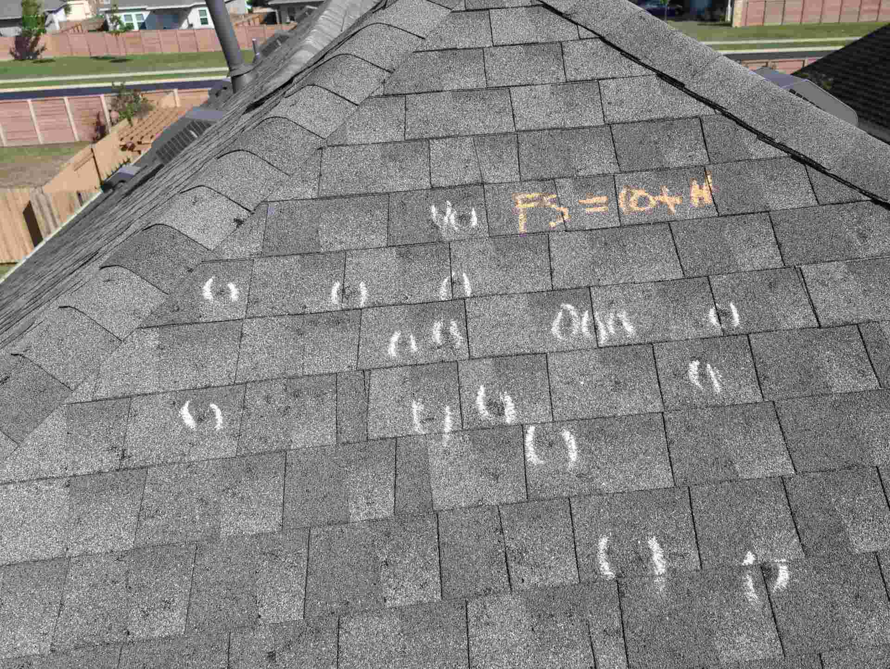

Why "It Looked Fine From the Street" Is an Expensive Assumption
The morning after a Texas hailstorm usually looks deceptively calm. You step outside, glance up at the roofline from the driveway, and see nothing obviously wrong. The shingles are still there. The gutters aren't hanging off. You go back inside and assume the roof made it through.
That assumption is one of the most expensive mistakes a homeowner can make.
Most hail damage doesn't announce itself from the ground. It hides in shallow depressions beneath knocked-away granules and inside the shingle mat, where a fracture sits invisible to the untrained eye. Anecdotally, our team at Verstera Roofing sees two patterns that tend to cost homeowners the most: those who panic and make hasty repair decisions, and those who wait too long because everything looked fine from the street. Neither approach protects your roof or your insurance claim.
"Hail damage is identifiable, documentable, and actionable — but it rarely announces itself loudly."
This guide covers 11 specific signs that your roof sustained hail damage, how to safely document what you find, how to distinguish storm impact from normal aging, and when it's time to bring in a professional.
How Do I Know If My Roof Has Hail Damage? The 3 Most Reliable Signs
Experienced inspectors look for three core indicators: random circular impact marks, soft shingle bruising, and matching dents on nearby soft metal surfaces. Any one of these signs alone can be ambiguous. All three together tell a clear and defensible story to an insurance adjuster.
What Hail Actually Does to Asphalt Shingles
Hail doesn't just knock granules loose. It fractures the fiberglass mat beneath the surface, leaving a soft, compressible spot that looks and feels different from the surrounding shingle. Here are the four shingle-level signs that matter most:
- ⚠︎ Sign 1: Round or irregular bald spots where granules have been displaced, exposing dark asphalt underneath
- ⚠︎ Sign 2: A soft, spongy bruise when gentle pressure is applied to the impact area (a mat fracture beneath the surface)
- ⚠︎ Sign 3: Fresh, dark, slightly shiny exposed asphalt — not the gray, chalky look of age-related granule loss
- ⚠︎ Sign 4: Random distribution of impact marks across storm-facing slopes — not in lines or along foot-traffic paths
That word "random" is important. Hail falls at the mercy of wind and storm physics, so genuine hail damage has no logical pattern. If impact marks are scattered across the slope without any directional logic, that distribution is meaningful evidence.

Hail impacts leave random, concave marks with fresh dark asphalt exposed
The Hidden Damage on Gutters, Flashing, and Soft Metal
Soft aluminum accessories are often the clearest corroborating evidence of a hail event — and adjusters know it. Unlike shingles, gutters and vents don't degrade gradually in ways that mimic impact damage. A clean circular dent in a gutter that wasn't there before the storm is hard to explain any other way.
- ⚠︎ Sign 5: Dented gutters and granule accumulation packed at downspout exits
- ⚠︎ Sign 6: Dimpling or impact marks on roof vents, chimney caps, and HVAC unit fins
- ⚠︎ Sign 7: Damage to skylight frames, window screens, and painted metal surfaces on the exterior
When shingles show suspected hail marks and the gutters are dented, that combination carries serious weight during the claims process. One without the other invites questions; both together support a storm event clearly.
How Hail Size Shapes the Damage
Size matters — but so does the age and condition of the roof it lands on.
Older roofs can sustain functional damage from smaller hail. A Class 4 impact-resistant system holds up far better than a 10-year-old standard shingle.
Once you cross the 1-inch threshold, compromised waterproofing, cracked seal strips, and fractured shingle mats become increasingly likely. According to NOAA storm records, the San Antonio area averages more than 4 days per year with hail at or above the 1-inch severe threshold, and NWS data suggests that figure has been trending upward over the past decade.
Even a storm producing smaller hail can accelerate significant aging on a roof already past its prime. A 10-year-old shingle in marginal condition behaves very differently under quarter-sized hail than a recently installed Class 4 impact-resistant system does.
Is It Hail — or Wind, Age, or a Manufacturing Defect?
Not every damaged-looking shingle is storm damage, and insurance adjusters are trained to know the difference. Understanding what sets hail apart protects you from filing a claim that falls apart under scrutiny.
| Cause | Pattern | What You'll See |
|---|---|---|
| Hail | Random, scattered across slopes | Concave impact marks, fresh dark asphalt, soft spots, dented metal nearby |
| Wind | Follows storm direction; ridges, edges, corners, eaves | Lifted, creased, or missing tabs and shingles |
| Normal aging | Gradual and broad; worst on sun-exposed slopes | Gray, oxidized granule loss, fading, curling, algae streaks |
| Manufacturing defect | Consistent, batch-wide, same position on many shingles | Bare spots, blistering, discoloration — no dents in gutters or vents |
A severe Central Texas storm can produce both wind and hail damage on the same roof, so inspect for both rather than stopping when you find one. And with manufacturing defects, the absence of collateral metal damage is often the clearest indicator that you're looking at something other than storm impact.
Your Safe, Ground-Level Hail Inspection Checklist
Before anything else: do not walk on a hail-impacted roof without a qualified professional present. Hail bruising can weaken shingles in ways that aren't visible from above, and a wet or damaged surface is a serious fall hazard. Every step below can be completed safely from the ground.
Safety Checks Before You Step Outside
Wait until the storm has fully passed and conditions are stable. Check for downed power lines in the yard or on the street, and treat every fallen line as live regardless of appearance. Scan the roofline and surrounding trees for hanging branches or structural debris before approaching the house. These checks take two minutes and are non-negotiable.
What to Look For as You Walk the Perimeter
Walk all four sides of the house methodically. Use binoculars or your phone's zoom to scan each roof slope in detail:
- ⚠︎ Sign 8: Missing or cracked shingles and visibly damaged ridge caps
- ⚠︎ Sign 9: Lifted or separated flashing along walls, chimneys, skylights, and roof valleys
- ⚠︎ Sign 10: Daylight visible through the roof deck (confirmed from the attic)
- ⚠︎ Sign 11: Wet or compressed insulation, ceiling stains, or active drips inside the attic
Also check HVAC units, window screens, siding panels, and painted metal surfaces for corroborating impact marks. These surfaces show hail evidence clearly and don't create the interpretive ambiguity that a worn shingle sometimes does.
A Quick Attic Check for Water Intrusion
If it's safe to access your attic, look specifically for Signs 10 and 11. Photograph everything before touching anything. Interior water damage is often the first visible consequence of functional shingle failure — meaning the roof's ability to shed water is already compromised, even if the exterior damage looked minor from the ground.
How to Document Hail Damage So Your Claim Holds Up
An insurance adjuster needs to verify three things before approving a claim: a covered storm occurred, the damage is genuine and storm-related, and it isn't pre-existing wear or neglect. Your documentation needs to build that case — before any repairs begin or debris is cleaned up.
The Shots Your Adjuster Actually Needs
- ✓ Wide shots of each side of the house showing which slopes are affected
- ✓ Medium shots of each damaged area in context
- ✓ Close-ups of individual impact points with a ruler or coin for scale
- ✓ A short narrated video walking the perimeter, naming each area and damage type
- ✓ Granules in the gutters, dents on vents and soft metal, and any interior water staining
Storm Records That Carry Weight
Supplement your photos with National Weather Service or NOAA records confirming the storm date and hail size in your area. Include any prior inspection report, maintenance invoices, or receipts for emergency tarping. A clear, chronological timeline — the storm date, when you discovered the damage, and every step you took afterward — ties your photos into a coherent, credible claim package.
What Not to Do Before Your Adjuster Visits
- ✕ Don't make permanent repairs — tarp active leaks and photograph the tarp before and after
- ✕ Don't discard damaged materials, granule-filled debris, or intact hailstones
- ✕ Don't rely on a contractor's verbal assessment — get written findings that tie the damage to the storm date
When Should You Stop DIY and Call a Professional?
Call a professional immediately if you see visible sagging in the roofline, active interior leaks, or large sections of missing shingles you can't safely document from the ground.
Also factor in your policy's filing window. Many Texas homeowner policies require you to report a claim within one year of the storm date, and some impose windows as short as 90 days. Check your policy's "notice of loss" language and the Texas Department of Insurance website for state-level guidance. Waiting through an entire season can close that window permanently, no matter how clear-cut the damage is.
What a Professional Inspection Covers That You Can't
A thorough professional inspection examines shingle mat integrity, underlayment condition, flashing seals, roof deck health, attic ventilation, drainage performance, and test-square documentation recording qualifying hail impacts per 10-by-10-foot section. Industry practice in Texas generally treats roughly 8 to 10 qualifying impacts per test square as a benchmark for full replacement, though some insurers use as few as 5. That kind of documentation only comes from someone who has physically walked and measured the roof.
Act on What You Find Before It Costs You More
By the time you see an active interior leak, the functional damage has often been present for weeks or longer. Random impact marks, soft shingle bruising, and dented nearby metal are your three most reliable indicators — start there.
If your walkthrough turned up any of the 11 signs in this guide, the smartest move is getting a professional opinion before the evidence changes or a filing deadline passes.
Frequently Asked Questions
The three most reliable indicators are random circular impact marks on shingles, soft or spongy bruising where the shingle mat has fractured, and matching dents on nearby soft metal such as gutters, vents, and chimney caps. Any one sign alone can be ambiguous; all three together make a clear case to an insurance adjuster.
Hail under 1 inch usually causes cosmetic damage on newer roofs in good condition. At 1 inch and above, functional damage — compromised waterproofing, cracked seal strips, fractured shingle mats — becomes increasingly likely. At 1.5 to 2 inches, widespread bruising and broken adhesive seals are common. Older roofs can be damaged by smaller hail.
Hail damage is scattered randomly across slopes and leaves concave depressions with fresh, dark asphalt exposed. Wind damage concentrates along ridges, edges, corners, and eaves, with lifted, creased, or missing shingles. Aging is gradual and broad, with gray, oxidized granule loss, curling, and fading — and no soft spots or impact depressions.
No. Avoid permanent repairs before the adjuster inspects. If water is getting in, tarp or cover the opening and photograph it before and after. Keep damaged materials, granule debris, and any hailstones, and get written findings from your contractor that tie the damage to the storm date.
Many Texas homeowner policies require you to report a claim within one year of the storm, and some set windows as short as 90 days. Check the notice-of-loss language in your own policy and the Texas Department of Insurance website for state-level guidance.
Industry practice in Texas generally treats roughly 8 to 10 qualifying impacts per 10-by-10-foot test square as a benchmark for full replacement, though some insurers use as few as 5. That documentation requires a professional who has physically walked and measured the roof.
Spotted Any of the 11 Signs?
Verstera Roofing offers a free professional roof inspection across Central Texas — Austin, San Antonio, Harker Heights, Temple, Leander, and Georgetown. You'll get a clear, documented picture of your roof's condition before you ever contact your insurance company. No pressure, just a straight answer about what your roof is up against.
Request a Free Hail Damage Inspection